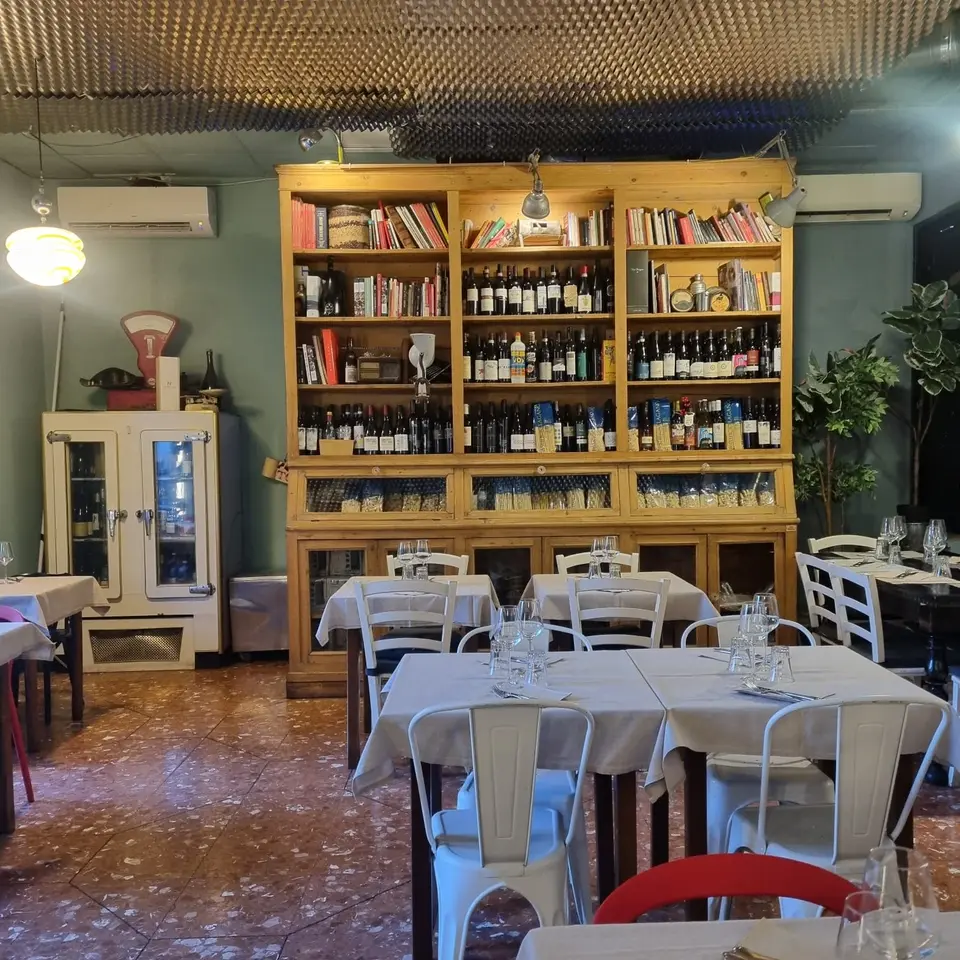

Eventi privati
Proloco può accogliere cene aziendali, gruppi e feste private. Per avere il ristorante in esclusiva scrivici la data e quante persone sarete.
In esclusiva la sala accoglie fino a 50 persone. Il menu lo decidiamo insieme: taglieri del bancone, piatti romani e ciociari, vini naturali del Lazio.
La tua richiesta